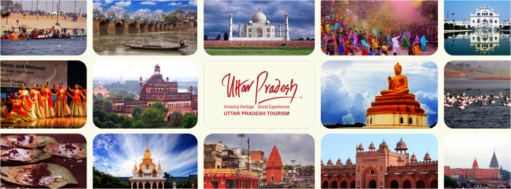

Uttar Pradesh is a state in northern India. With roughly 200 million inhabitants, it is the most populous state in India as well as the most populous country subdivision in the world. It was created on 1 April 1937 as the United Provinces of Agra and Oudh during British rule, and was renamed Uttar Pradesh in 1950. The state is divided into 18 divisions and 75 districts with the capital being Lucknow. The main ethnic group is the Hindavi people, forming the demographic plurality. On 9 November 2000, a new state, Uttarakhand, was carved out from the state's Himalayan hill region. The two major rivers of the state, the Ganga and Yamuna, join at Allahabad (Prayagraj) and then flow as the Ganga further east. Hindi is the most widely spoken language and is also the official language of the state, along with Urdu. 
Uttar Pradesh has a humid subtropical climate and experiences four seasons Uttar Pradesh ranks first in domestic tourist arrivals among all states of India with more than 71 million, owing to its rich and varied topography, vibrant culture, festivals, monuments, ancient places of worship, and viharas. Uttar Pradesh is also home to three World Heritage Sites: the Taj Mahal, Agra Fort, and the nearby Fatehpur Sikri. Millions gather at Allahabad to take part in the Magh Mela festival on the banks of the Ganges.This festival is organised on a larger scale every 12th year and is called the Kumbh Mela, where over 10 million Hindu pilgrims congregate in one of the largest gatherings of people in the world. The historically important towns of Sarnath and Kushinagar are near to Gorakhpur and are located not far from Varanasi.Gautama Buddha gave his first sermon after his enlightenment at Sarnath and died at Kushinagar; both are important pilgrimage sites for Buddhists. Also at Sarnath are the Pillars of Ashoka and the Lion Capital of Ashoka, both important archaeological artefacts with national significance. At a distance of 80 km from Varanasi, Ghazipur is famous not only for its Ghats on the Ganges but also for the tomb of Lord Cornwallis, the 18th-century Governor of East India Company ruled Bengal Presidency. The tomb is maintained by the Archaeological Survey of India. The state also has a bird sanctuary in Etah district called Patna Bird Sanctuary. Lucknow, the capital of the state, has several beautiful historical monuments. To promote tourism, the Directorate of Tourism was established in the 1972 with a Director General who is an IAS. officer. In 1974 the Uttar Pradesh State Tourism Development Corporation was established to look after the commercial tourist activities